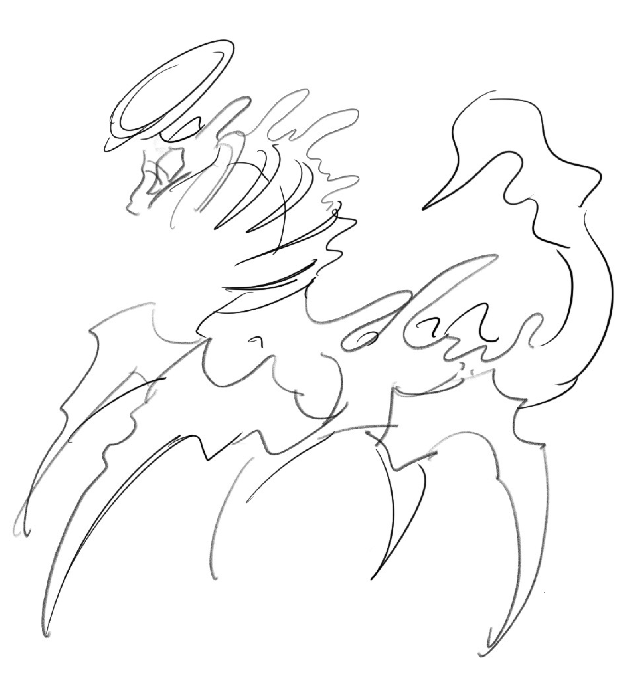
本專案以原創怪獸角色為核心，運用 Rhino 的曲線工具勾勒出流暢的造型結構。製程首先將 2D 設計轉化為 3D 模型， 用以精準預覽組裝後的立體型態，最終導出平面的片體排版，透過雷射切割技術加工椴木板，成功打造出可實際組裝的實體 3D 木拼圖。
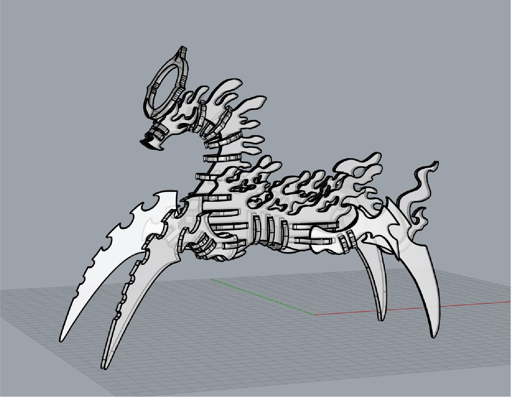
3D Model Preview — Rhino
Laser Cut Layout — Flat Pattern
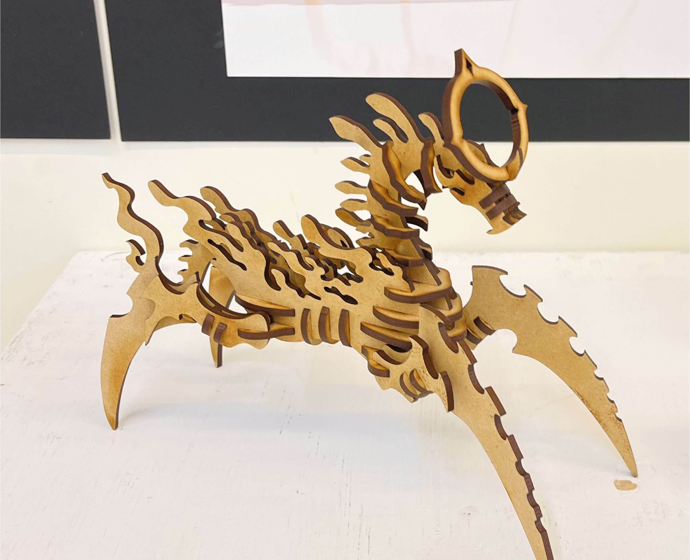
本作品由 38 個組件 構成，材質選用木質板材進行雷射切割，全機採用榫接結構手工組裝而成。 整體平面展開圖皆於 Rhino 內完成精密建模並導出。作品最終實體尺寸為 233 x 94 x 177 mm。
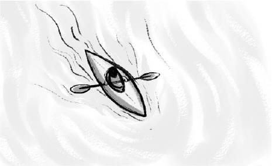
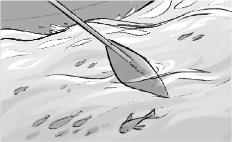
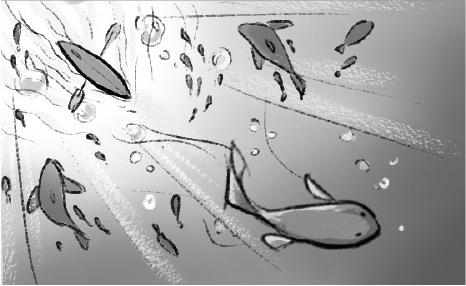
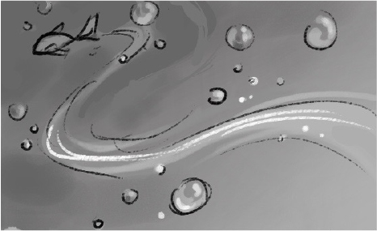
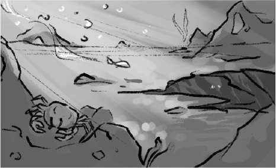
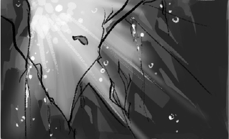
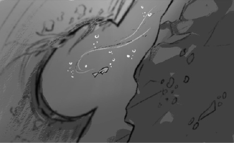
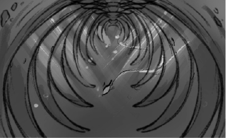
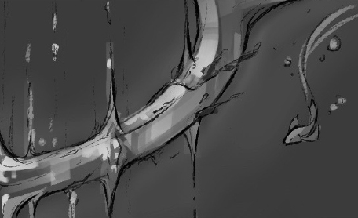
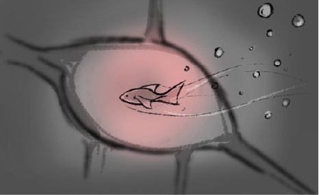
Once a divine envoy sent by the gods, the Ancient Dragon was forged as a weapon of slaughter.
For ages, it carried out divine commands, staining its body with the blood of countless victims.
Tormented by guilt, it turned away from its divine mission and sought purification in the ocean.
It drifted into the abyss, yearning for peace, where its flesh was slowly consumed by deep-sea microorganisms.
Only its skeletal remains and the faint halo of its divine past remained.
Now, it wanders the lightless seabed as a ghostly remnant,
its hollow bones radiating a faint holy glow—an eerie beacon of forgotten grace and lingering judgment.